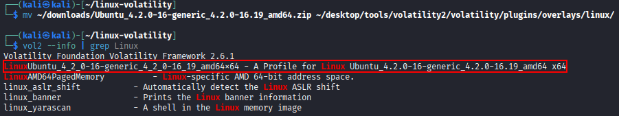
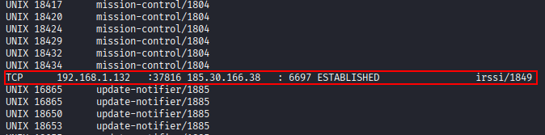
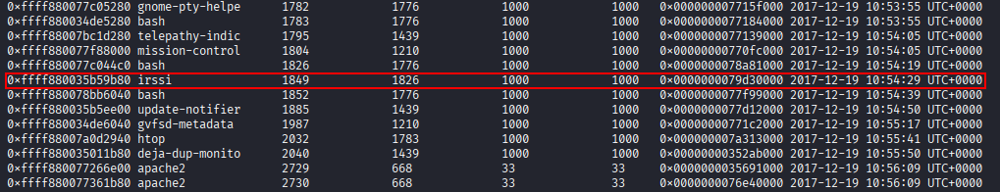
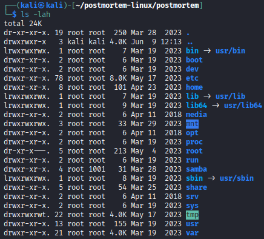
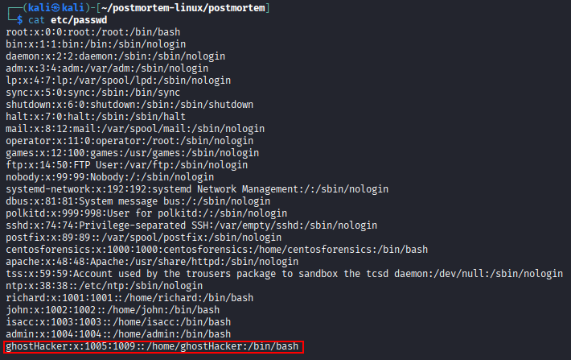

Linux challenges¶
Atenea challenge¶
Introduction¶
A SIEM alert reported that a Linux host is making a large number of requests to an external IP address. The machine is suspected to have been compromised. Before shutting down the system, a memory dump was acquired to begin the investigation.
As a forensic analyst, you must identify the malicious PID responsible for this alert (for example: 1255).
The memory dump can be downloaded here.
Solution¶
First, verify what distro and kernel version the dump is by performing the following command:
vol3 -f dump-practica5 banners.Banner

As shown, the dump corresponds to Ubuntu 4.2.0-16-generic. Download a matching Volatility profile for that kernel version from the following GitHub repository.
Move the .zip file into Volatility’s Linux overlay plugin directory and verify that the profile is recognized. Note that, for this exercise, Volatility 2 is used instead of Volatility 3.
mv ~/downloads/Ubuntu_4.2.0-16-generic_4.2.0-16.19_amd64.zip ~/desktop/tools/volatility2/volatility/plugins/overlays/linux/
vol2 --info | grep Linux

With the correct profile loaded, Volatility can enumerate network connections and running processes from the dump. To inspect active connections, run:
vol2 --profile=LinuxUbuntu_4_2_0-16-generic_4_2_0-16_19_amd64x64 -f dump-practica5 linux_netstat

The output shows an outbound connection from the host to an external IP address, associated with the irssi process.
To corroborate this finding, list running processes with linux_pslist:
vol2 --profile=LinuxUbuntu_4_2_0-16-generic_4_2_0-16_19_amd64x64 -f dump-practica5 linux_pslist

The same irssi process appears with PID 1849. At this point, both SSH-related activity and irssi warrant further investigation.
Inspect the memory mappings of the irssi process:
vol2 --profile=LinuxUbuntu_4_2_0-16-generic_4_2_0-16_19_amd64x64 -f dump-practica5 linux_proc_maps -p 1849

The process memory map reveals several indicators relevant to the investigation:
Cryptography and SSL libraries are loaded, confirming that the process is capable of encrypted communications.
Socket and networking libraries are present, consistent with an active outbound connection.
Perl runtime support is loaded — meaning the process can execute Perl scripts, a capability commonly abused by IRC-based malware to run commands or deploy additional payloads.
Conclusion: Combined with the earlier network findings, the evidence points to malicious use of a legitimate IRC client:
Encrypted connection to port 6697 (IRC over SSL)
Ability to execute Perl scripts
Persistent connection to an external IP address
Together, these indicators suggest that PID 1849 (irssi) is likely operating as an IRC bot or command-and-control (C2) channel. Attackers frequently abuse legitimate IRC clients such as Irssi — sometimes modified — to maintain persistence and remote control over compromised Linux systems.
Linux Post-mortem Forensics¶
On April 5, 2022, police were contacted by a company whose system had been hacked. You have been hired to assist the investigation and find evidence of the intrusion. According to the system administrator, only the following ports were supposed to be open on the machine: 21, 22, 23, 3306, and 123 — some of which he uses for routine system maintenance.
Objective¶
The main goal is to find evidence of compromise: system logs, commands entered, open ports, malicious applications, and related artifacts.
Tips¶
Any forensic technique, command, or tool may be used to solve the scenario.
Hints¶
Which user account was added by the attacker?
Is any malware installed on the machine?
Can you identify the directory path where confidential files may have been accessed or modified?
Did the attacker open additional ports? Which ones?
Was any malicious script scheduled for execution?
Download the disk image here.
Once downloaded, mount the image:
sudo losetup -fP postmortem.img
mkdir postmortem
sudo mount -o ro /dev/loop0 postmortem
cd postmortem
Verify the content once mounted:
ls -lah

First, review the system user accounts for anything anomalous:
cat etc/passwd
A user named ghostHacker is present on the system. This account is unlikely to be legitimate and was probably created by the attacker to maintain access.

To identify persistent malicious scripts, review the cron logs:

The logs indicate that a keylogger has been installed and scheduled on the system.
Review SSH logs for suspicious authentication activity:

Two successful SSH connections using user:password authentication are recorded. The attacker likely gained access via SSH after obtaining credentials through social engineering or brute force — multiple failed login attempts also appear in the logs.
Check whether bash history retains any further evidence:

Only the exit command remains. The attacker likely cleared .bash_history after completing the intrusion.
Further investigation reveals a modified file:

The file was presented as an installer, but its actual behavior is to shut down the machine — consistent with a decoy or anti-forensics payload.
Analysis of the firewalld logs shows that port 88 was opened — a port not listed among those the administrator claimed were in use.

Conclusions¶
Based on the artifacts reviewed above, the intrusion can be reconstructed as follows:
Initial access: The attacker authenticated as
rootover SSH, likely using credentials obtained through social engineering or brute force. SSH logs show multiple failed attempts before two successful logins.Persistence: The attacker created the user account
ghostHackerto maintain redundant access to the system.Data targeting: Files under
/mnt/companywere accessed or modified — a path consistent with confidential company data.Network changes: Port 88 was opened via the firewall, expanding the attack surface beyond the ports the administrator expected.
Malware deployment: A keylogger was installed and its execution was scheduled through crontab, providing ongoing credential harvesting.
Anti-forensics: Once the objective was achieved, the attacker cleared
.bash_historyfiles and exited the shell, leaving minimal command-line traces.